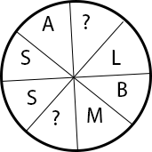

18. মুক্তিযুদ্ধভিত্তিক উপন্যাস কোনটি?
ক্রীতদাসের হাসি
মাটি আর অশ্রু
হাঙর নদী গ্রেনেড
সারেং বউ
সঠিক উত্তর : হাঙর নদী গ্রেনেড
19. ১৯৮৫ সালে নাসির উদ্দীন স্বর্ণ পদক কে পান?
সৈয়দ আলী আহসান
সৈয়দ ওয়ালীউল্লাহ
সৈয়দ শামসুল হক
সিকান্দার আবু জাফর
সঠিক উত্তর : সৈয়দ আলী আহসান
20. বাংলা সাহিত্যের পঠন-পাঠনের সুবিধার জন্য বাংলা সাহিত্যের ইতিহাসকে তিনটি যুগে ভাগ করা হয়েছে-- বাংলা সাহিত্যের প্রাচীন যুগ
৬৫০-৮৫০
৬৫০-১২০০
৬৫০-১২৫০
সঠিক উত্তর : ৬৫০-১২০০
21. রক্তে হিমোগ্লোবিনের কাজ -
অক্সিজেন পরিবহন করা
রোগ প্রতিরোধ করা
রক্ত জমাট বাঁধতে সাহায্য করা
উল্লেখিত সবকয়টিই
সঠিক উত্তর : অক্সিজেন পরিবহন করা
22. মানবদেহে শক্তি উৎপাদনের প্রধান উৎস -
পরিপাক
খাদ্য গ্রহণ
শ্বসন
রক্ত সংবহন
সঠিক উত্তর : শ্বসন
23. কোন সংখ্যার ০.১পৌনোপৌনিক ভাগ এবং ০.১ ভাগের মধ্যে পার্থক্য ১.০ হলে, সংখ্যাটি কত?
১০
৯
৯০
১০০
সঠিক উত্তর : ৯০
24. একটি আয়তাকার কক্ষের ক্ষেত্রফল ১৯২ বর্গমিটার। এর দৈর্ঘ্য ৪ মিটার কমালে এবং প্রস্থ ৪ মিটার বাড়ালে ক্ষেত্রফল অপরিবর্তিত থাকে। আয়তাকার কক্ষের সমান পরিসীমাবিশিষ্ট বর্গাকার কক্ষের ক্ষেত্রফল কত হবে?
২২৫ বর্গমিটার
১৪৪ বর্গমিটার
১৬৯ বর্গমিটার
১৯৬ বর্গমিটার
সঠিক উত্তর : ১৯৬ বর্গমিটার
25. Which of the following ecosystems covers the largest area of the earth's surface ?
Marine Ecosystem
Desert Ecosystem
Mountain Ecosystem
Fresh water Ecosystem
সঠিক উত্তর : Marine Ecosystem
26. √169 is equal to -
17
11
13
15
সঠিক উত্তর : 13
27. তিনটি ক্রমিক সংখ্যার গুণফল তাদের যোগফলের ৫ গুন; সংখ্যা তিনটির গড় কত?
৪
৫
৩
৬
সঠিক উত্তর : ৪
28. একটি শ্রেণিতে যতজন ছাত্র-ছাত্রী আছে প্রত্যেকে তত পয়সার চেয়ে আরও 25 পয়সা বেশি করে চাঁদা দেওয়ায় মোট 75 টাকা উঠল। ঐ শ্রেণির ছাত্র-ছাত্রী সংখ্যা কত?
70
85
75
100
সঠিক উত্তর : 75
29. মামুন 240 টাকায় একই রকম কতগুলি কলম কিনে দেখল যে, যদি সে একটি কলম বেশি পেত তাহলে প্রতিটি কলমের মূল্য 1 টাকা কত পড়ত। সে কতগুলি কলম কিনেছিল?
13 টি
14 টি
15 টি
16 টি
সঠিক উত্তর : 15 টি
30. ১৭ দিন আগে আবদুর রহিম বলেছিল যে তার জন্মদিন “আগামীকাল”। আজ ২৩ তারিখ হলে তার জন্মদিন কোন তারিখে?
৭
৮
৯
১০
32. ইদানিং আপনার মনে হচ্ছে সংসারে আপনার গুরুত্ব হ্রাস পাচ্ছে। আপনি এমন অবস্থায়
ক্ষোভ ও দুঃখ প্রকাশ করে মন খারাপ করবেন
খুবই হতাশাবোধ করবেন
বন্ধুদের সাথে বিষয়টি আলাপ করবেন
সংসার-এর প্রতি গভীর মনোযোগ দেবেন
সঠিক উত্তর : সংসার-এর প্রতি গভীর মনোযোগ দেবেন
33. আমার কক্ষে এক বৃদ্ধ দম্পতি ও তাদের সাথে দুই দম্পতি প্রত্যেকে দুইজন করে সন্তানসহ আমার কক্ষে প্রবেশ করলেন। আমার কক্ষে মোট কতজন লোক হল?
৯
১০
১১
১২
সঠিক উত্তর : ১১
34. ক খ-এর পুত্র। খ এবং গ পরস্পর বোন। ঘ হচ্ছে গ-এর মা, চ, ঘ-এর পুত্র। চ-এর সংগে ক-এর সম্পর্ক কি?
ক এর মামা চ
ক এর খালু চ
চ এর নানা ক
ক এর চাচা চ
সঠিক উত্তর : ক এর মামা চ
35. 
T, X
X, T
S, T
T, B
সঠিক উত্তর : T, X
36. নিচের কোনটির বিদ্যুৎ পরিবাহিতা সবচেয়ে বেশি ?
তামা
রূপা
সোনা
কার্বন
সঠিক উত্তর : রূপা
37. বরফ পানিতে ভাসে কারণ বরফের তুলনায় পানির -
ঘনত্ব কম
ঘনত্ব বেশি
তাপমাত্রা বেশি
দ্রবণীয়তা বেশি
সঠিক উত্তর : ঘনত্ব বেশি
38. Photosynthesis takes place in -
All parts of the plants
Roots of the plant
Stems of the plants
Green parts of the plants
সঠিক উত্তর : Green parts of the plants
39. ইউরিয়া থেকে উদ্ভিদ কি খাদ্য উপাদান প্রহণ করে ?
সালফার
ফসফরাস
নাইট্রোজেন
পটাশিয়াম
সঠিক উত্তর : নাইট্রোজেন
40. ডায়াবেটিস রোগ সম্পর্কে যে তথ্যটি সত্য নয় তা হলো-
এ রোগ মানবদেহের কিডনি নষ্ট করে
চিনি জাতীয় খাবার বেশী খেলে এ রোগ হয়
এ রোগ হলে রক্তে গুকোজের মাএা বৃদ্ধি পায়
ইনসুলিনের অভাবে এ রোগ হয়
সঠিক উত্তর : চিনি জাতীয় খাবার বেশী খেলে এ রোগ হয়
41. ডেঙ্গু জ্বরের বাহক কোন মশা ?
কিউলেক্র
এডিস
সেভিং সোপ
সব ধরনের মশা
সঠিক উত্তর : এডিস
42. সুষম খাদ্যের উপাদান কয়টি?
৪ টি
৫ টি
৬ টি
৮ টি
সঠিক উত্তর : ৬ টি
43. ইনসুলিন নিঃসৃত হয় কোথা থেকে?
অগ্ন্যাশয় হতে
প্যানক্রিয়াস হতে
লিভার হতে
পিটুইটারী গ্লান্ড হতে
সঠিক উত্তর : অগ্ন্যাশয় হতে
44. হাড় ও দাঁত কে মজবুত করে-
আয়োডিন
আয়রন
ম্যাগনেসিয়াম
ফসফরাস
সঠিক উত্তর : ফসফরাস
45. অতিরিক্ত খাদ্য থেকে লিভারে সঞ্চিত সুগার হল -
গ্লাইকোজেন
গ্লুকোজ
ফ্রুক্টোজ
সুক্রোজ
সঠিক উত্তর : গ্লাইকোজেন
46. প্রানী জগতের উৎপত্তি ও বংশ সম্বন্ধীয় বিদ্যাকে বলে -
জুওলজী
বায়োলজী
ইভোলিউশন
জেনেটিক্স
সঠিক উত্তর : ইভোলিউশন
47. কোন খাদ্যে প্রোটিন বেশি ?
ভাত
গরুর মাংস
মসুর ডাল
ময়দা
সঠিক উত্তর : মসুর ডাল
48. কোন ডালের সঙ্গে ল্যাথারাইজম রোগের সর্ম্পক আছে ?
অড়হর
ছোলা
খেসারী
মটর
সঠিক উত্তর : খেসারী
49. সুনামির (Tsumami)কারণ হলো-
আগ্নেয়গিরির অগ্যুৎপাত
ঘূর্ণিঝড়
চন্দ্র ও সূর্যের আকর্ষণ
সমুদ্র তলদেশের ভূমিকম্প
সঠিক উত্তর : সমুদ্র তলদেশের ভূমিকম্প
50. জমির লবণাক্ততা নিয়ন্ত্রণ করে কোনটি ?
কৃএিম সার প্রয়োগ
পানি সেচ
জমিতে নাইট্রোজেন ধরে রাখা
প্রাকৃতিক সার প্রয়োগ
সঠিক উত্তর : পানি সেচ
51. নবায়নযোগ্য জ্বালানি কোনটি ?
পরামাণু শক্তি
কয়লা
পেট্রোল
প্রাকৃতিক গ্যাস
68. বাংলাদেশ টেলিভিশনের যাত্রা শুরু হয় কত সনে?
১৯৪৭ খৃঃ
১৯৫৮ খৃঃ
১৯৬৪ খৃঃ
১৯৬৫ খৃঃ
সঠিক উত্তর : ১৯৬৪ খৃঃ
69. বাংলাদেশ শেয়ারবাজার কার্যক্রম কোন সংস্থা নিয়ন্ত্রণ করে?
সিকিউরিটিজ এক্সচেঞ্জ কমিশন
অর্থ মন্ত্রণালয়
প্রধানমন্ত্রীর কার্যালয়
বাংলাদেশ ব্যাংক
সঠিক উত্তর : সিকিউরিটিজ এক্সচেঞ্জ কমিশন
70. বাংলাদেশ ও মায়ানমার কে বিভক্তকারী নদী কোনটি?
কর্ণফুলী
হালদা
সাংগু
নাফ
সঠিক উত্তর : নাফ
71. Who is known as the 'Lady of the Lamp'?
Sorojini Naidu
Hellen Killer
Florence Nightingale
Madame Teresa
সঠিক উত্তর : Florence Nightingale
72. For which of the following disciplines Nobel Prize is awarded ?
Literature, peace and Economices
Physiology or Medicine
Physices and Chemistry
All of the above
সঠিক উত্তর : All of the above
73. EURO is the currency of -
Africa
Asia
Europe
America
সঠিক উত্তর : Europe
74. জামাল নজরুল ইসলাম কে?
বৈজ্ঞানিক
ফুটবল খেলোয়াড়
অর্থনীতিবিদ
কবি
76. আরব বসন্ত- বলতে কি বুঝায়?
আরবীয় মহিলাদের ক্ষমতায়ন
আরবের বিভিন্ন দেশে গণজাগরণ
আরব অঞ্চলে বসন্তকাল
আরব রাজতন্ত্র
সঠিক উত্তর : আরবের বিভিন্ন দেশে গণজাগরণ
77. আয়তনে পৃথিবীর সবচেয়ে ছোট দেশ?
মালদ্বীপ
ফিজি
ভ্যাটিকান
কুয়েত
সঠিক উত্তর : ভ্যাটিকান
78. এশিয়ার হিন্দু রাষ্ট্র কোনটি?
মালদ্বীপ
নেপাল
ভারত
ভূটান
সঠিক উত্তর : ভারত
79. লয়াজিরগা- কোন দেশের আইন সভা?
আফগানিস্তান
ফিজি
সিরিয়া
লেবানন
সঠিক উত্তর : আফগানিস্তান
80. শ্যামদেশ কোন দেশের পুরাতন নাম?
থাইল্যান্ড
মিসর
ইরাক
ইরান
সঠিক উত্তর : থাইল্যান্ড
81. International Court of Justice-এর সদর দপ্তর কোথায় অবস্থিত?
যুক্তরাষ্ট্রের নিউ ইয়র্কে
নেদারল্যান্ডসের দ্য হেগে
সুইজারল্যান্ডের বার্নে
কানাডার অটোয়ায়
সঠিক উত্তর : নেদারল্যান্ডসের দ্য হেগে
82. অ্যামনেস্টি ইন্টারন্যাশনাল-এর সদর দপ্তর কোথায়?
প্যারিস
জেনেভা
রোম
লন্ডন
সঠিক উত্তর : লন্ডন
83. IMF is the result of
Hawana Conference
Rome Conference
Geneva Conference
Brettonwood Conference
সঠিক উত্তর : Brettonwood Conference
84. নিম্নের কোন সংস্থাটি ২১ ফেব্রুয়ারিকে আন্তর্জাতিক মাতৃভাষা দিবস হিসাবে স্বীকৃতি দিয়েছে?
UNCTAD
UNDP
UNESCO
UNICEF
সঠিক উত্তর : UNESCO
85. কোনটি D-৮ ভুক্ত দেশ নয়?
তুরস্ক
নাইজেরিয়া
ভারত
মালয়েশিয়া
সঠিক উত্তর : ভারত
86. ‘বিশ্ব তামাকমুক্ত দিবস’ প্রতিপালিত হয় প্রতি বছরের-
৩১ জানুয়ারি
৩০ মার্চ
৩০ এপ্রিল
৩১ মে
সঠিক উত্তর : ৩১ মে
87. কোপেন হেগেন কোন দেশের রাজধানী?
আর্মেনিয়া
ডেনমার্ক
বেলজিয়াম
ভিয়েতনাম
সঠিক উত্তর : ডেনমার্ক
88. মুজিবনগরে কোন তারিখে স্বাধীনতা ঘোষণা করা হয়েছিল?
২৬ মার্চ,১৯৭১
১০ এপ্রিল,১৯৭১
৬ সেপ্টেম্বর,১৯৭১
১০ নভেম্বর,১৯৭১
সঠিক উত্তর : ১০ এপ্রিল,১৯৭১
89. ( 5^(n 2) 35*(5^(n-1)) )/4*5^n এর মান কত?
4
8
5
7
সঠিক উত্তর : 8
90. A = {1, 2, 3} B = ∅ হলে A ∪ B = কত?
{1, 2, 3}
{2, 3, ∅}
{1, 2, ∅}
∅
সঠিক উত্তর : {1, 2, 3}
91. x + y = 2, x^2 + y^2 = 4 হলে x^3 + y^3 = কত?
8
9
16
25
সঠিক উত্তর : 8
92. N.B stands for -
Non bearing
Note before
No bar
Nota bene
সঠিক উত্তর : Nota bene
93. বিষমবাহু ΔABC-এর বাহুগুলির মান এমনভাবে নির্ধারিত যে, AD মধ্যমা দ্বারা গঠিত ΔABD-এর ক্ষেত্রফল x বর্গমিটার। ΔABC-এর ক্ষেত্রফল কত?
x^2 বর্গমিটার
2x বর্গমিটার
(x/2)^2 বর্গমিটার
(√x/3)^3 বর্গমিটার
সঠিক উত্তর : 2x বর্গমিটার
94. একটি বৃত্তের পরিধি ও ক্ষেত্রফল যথাক্রমে ১৩২ সেন্টিমিটার ও ১৩৮৬ বর্গসেন্টিমিটার। বৃত্তটির বৃহত্তম জ্যা-এর দৈর্ঘ্য কত?
৬৬ সেন্টিমিটার
৪২ সেন্টিমিটার
২১ সেন্টিমিটার
২২ সেন্টিমিটার
সঠিক উত্তর : ৪২ সেন্টিমিটার
95. একটি পঞ্চভুজের সমষ্টি
৪ সমকোণ
৬ সমকোণ
৮ সমকোণ
১০ সমকোণ
সঠিক উত্তর : ৬ সমকোণ
96. ঘড়িতে এখন ৮টা বাজে। ঘণ্টার কাঁটা ও মিনিটের কাঁটার মধ্যকার কোণটি হলো
৯০°
১২০°
৬০°
১৫০°
সঠিক উত্তর : ১২০°
97. ২০ ফুট লম্বা একটি বাঁশ এমনভাবে কেটে দু’ভাগ করা হলো যেন ছোট অংশ বড় অংশের দুই তৃতীয়াংশ হয়, ছোট অংশের দৈর্ঘ্য কত ফুট?
৮
১০
৭
৬
সঠিক উত্তর : ৮
98. Fill in the blank of the following sentence with the right form of verb. if I _____ a king!
shall be
am
was
were
সঠিক উত্তর : were
99. In Cricket game the length of the pitch between th two wickets is -
21 yards
24 yards
23 yards
22 yards
সঠিক উত্তর : 22 yards
100. Badminton is the national sport of -
Nepal
Malaysia
Scotland
China